Version 1
Interpretability Experiments #1: Linear Centroid Hypothesis
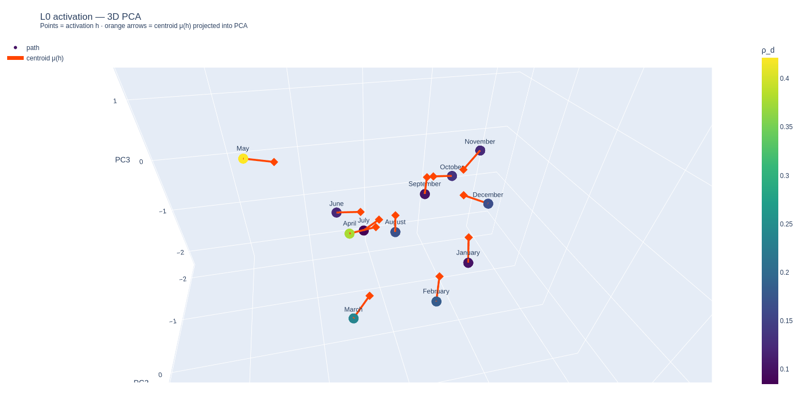
Background
I came across The Linear Centroid Hypothesis (Walker et al., 2026). The basic idea is that a deep network at a given layer can be approximated locally by an affine map, and that the neighbourhood where that approximation holds can be studied as a local expert.
The contrast is with the Linear Representation Hypothesis (LRH), which postulates that dimensions in activation space correspond cleanly and globally to discrete conceptual features — a nice idea, but almost certainly too simple. The Linear Centroid Hypothesis (LCH) makes a weaker but more plausible claim: activation space can be subdivided into local experts characterised by roughly affine transformations; within each expert one can find locally Euclidean coordinates that yield features that are more interpretable there than in raw activation coordinates.
I like this because it echoes manifolds: globally non-Euclidean, everywhere locally Euclidean — which hints at differential-geometric tools for activation space. For example, could we define parallel transport for steering vectors, or characterise global geometry? If LRH held globally, perhaps the relevant geometry would be \(\mathbb{R}^d\); if not, perhaps failure modes look more like hyperbolic or spherical structure. But that is for another day.
Centroid vectors
The main objects here are layer Jacobians. For a transformer block, back-propagate from the MLP output to the pre-MLP LayerNorm output \(h\), then take the row-sum of the Jacobian. At token \(x\), with MLP map \(f\):
Activations tell you where the representation sits; centroids summarise the local MLP computation at that point. A related construction appears in Equivalent Mappings of Large Language Models.
What we plot
I started with ordinal concepts (months), PCA paths, and Frenet-like frames, but the more interesting move is to treat centroid vectors as tangent-ish directions and compare them with activations across several concept lists and layers of DistilGPT-2.
Geometry is computed in full hidden space first; PCA is only a 3D picture. In the interactive plot below, marker colour is \(\rho_d\): the fraction of each step vector visible in the PCA projection (relevant mainly when a path ordering is imposed).
Orange arrows (activation view) show \(\mu(h)\) projected into the PCA basis fit on activations — not the same basis as the centroid-only view.
The goal is not a grand theory, but to explore whether centroid trajectories carry geometry that activation trajectories alone do not.
Interactive explorer
DistilGPT-2 · template-mean trajectories · 3D PCA projection. Use the controls to change concept, layer, and representation.
Findings
So we've got a few different concepts here, and some interesting findings. Lets go through them one by one.
Months
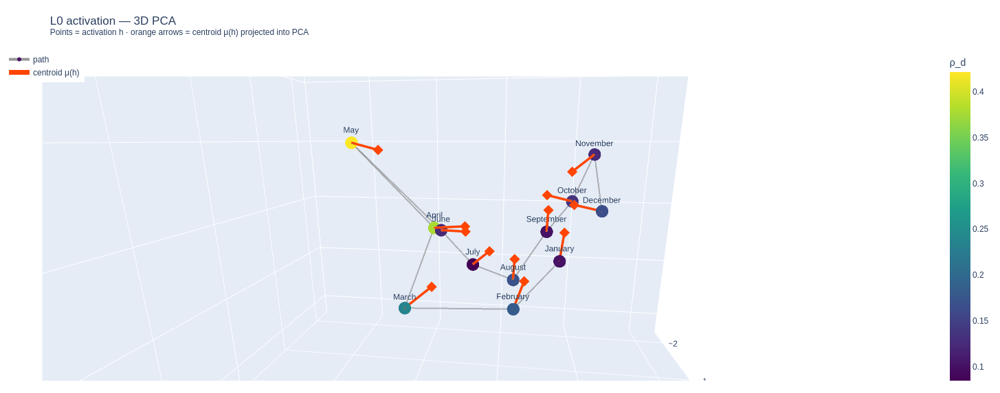
You'll have to excuse the textual overlap, it's hard to get good images, so I encourage you to follow along in the interactive plot.So the first thing to notice is that, unsurprisingly, there is a natural circular path here. No great surprise. What is more interesting is that the centroid vectors (almost) all seem to point towards a common "centre of mass", probably not a single common point, but there appears to be a small region through which almost all of the centroid vectors pass through if extended to rays. Which is interesting. What is even more interesting, is the three outliers. March and May both point towards the centre well enough, but are quite a bit further away from both of their nearest neighbours . August and September are both only a moderate distance from their nearest neighbors, but their centroid point away from the centre. Which is interesting. Of these four months, three, March, May and August, have distinctive homonyms that could plausibly confuse any signal. As for September, things are less clear.
In any case, this suggests a plausible, but tenuous, hypothesis: Given a set of examples of a concept, perhaps we can identify a conceptual centre of mass that we can find in the locus of these centroidal rays. In general, the rays will intersect only with very low probability, but for each pair of rays there will be a point of minimal distance between the two. And it is entirely possible that the sphere enclosing the locus of such points is conceptually meaningful in "some" way. It would be really cool, if the activations in that sphere generally (i.e. with high probability) corresponded to terms that were strongly descriptive of the original activation set. That would be very cool, though the "september problem" immediately suggests that things will probably not be so cut and dry. Still, there is clearly signal here.
Now lets move on to layer 1. Maybe we will see an even cleaner centre of mass?
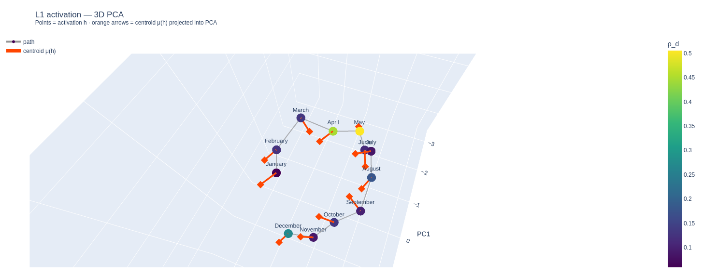
Nope, too bad. Not really a lot of signal here, except the path is still circular, and the May centroid is pointing in the opposite direction to all the others, which is kind of interesting, but there is really not much to see here. Moving on to Layer 2: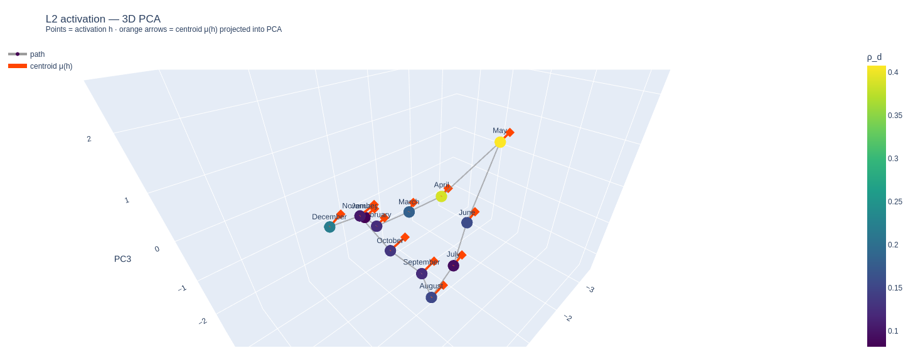
Now this is more interesting. Suddenly all the vectors are nearly aligned. It almost looks like these could be the normal vectors of some reasonably well behaved hypersurface? In any case, this allows us to articulate another plausible hypothesis, that coherent concepts exhibit high levels of centroidal alignmnet. Or maybe it's just a PCA artifact. Who knows.Layers 3 and 4 exhibit pretty much the same behaviour, but even tighter, check it out.
But what about layer 5?
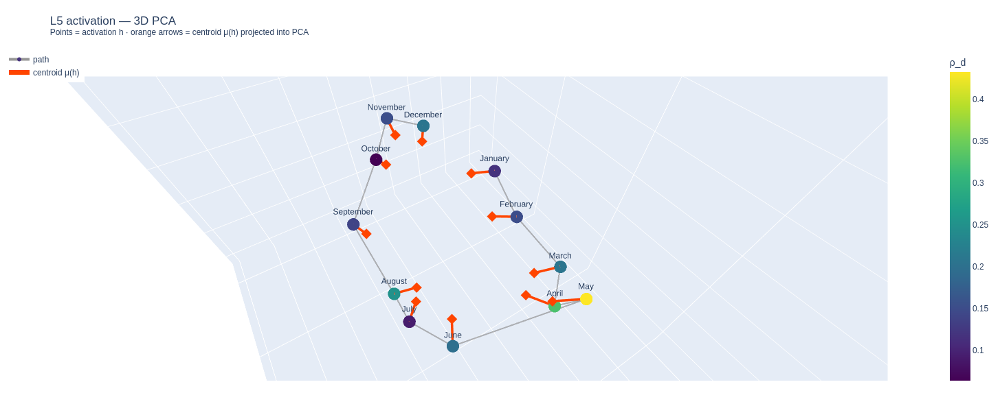
As we can see, layer 5 exhibits the same kind of geometry as layer 0, but more coherent. March, May and August are still outliers, but logically they should be so that's good. There is no September problem anymore. Or at least not as much of one. The September centroid is still not as closely aligned to the centre as other months, but it is much closer than in layer 0. What does this mean? I don't know. But it does suggest that we can characterise the action of transformer layers on conceptual sets in a way that is nicely coherent and low dimensional. Maybe there is even some nice TDA type arguments that could be made here (Note: I will not be doing that here).Moving on. We will look at colors now. The reason I choose this is because colors are a nice simple category, but also even though colors are not an ordinal category, in the sense of having an objective ordinalisation like months do, but colors do have a highly plausible ordering, the color spectrum. Lets have a look to see if the resulting path looks like it could be circular
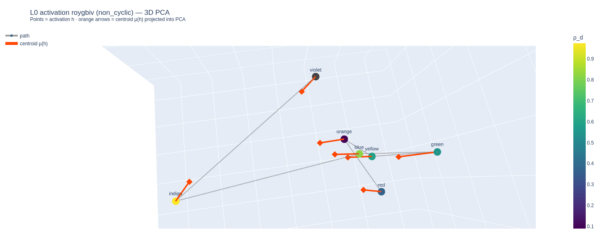
Nope. I mean technically yeah, this path is probably homeomorphic to the circle, since we can close the red-violet interval, and there almost certainly no self-intersections. But there is clearly no "nice" homeomorphism to the circle. Oh well. What we do notice is that the same centre-of-mass behaviour as in layer 0 of the months concept set. This one is even more coherent, no septembers here. Indigo looks a bit rough. But is indigo even a real color? I can't even remember the last time I heard someone refer to something as indigo. On the other hand, if not for indigo, this picture would look like layer 2-4 of the months set, rather than later 0 and 5; just as an aside, I will hereafter refer to the former type as translation alignment and the latter type as contractive alignment. So maybe translational alignment is just an illusion resulting from an underspecified concept set? It seems possible, but also hard to prove conclusively. If true, it might suggest a useful geometric heuristic for what constitutes a complete conceptual set.How about layer 1? Strong translational alignment, except for indigo, whose centroid is roughly orthogonal to the rest of the concept set. Same with layer 2, except now the indigo centroid is pointing in the opposite direction of the primary alignment. Clearly indigo is being identified as very much different from the other colors. On layer 3, things change quite a bit, coherence becomes much weaker, but indigo is still an outlier, but now violet is too. Layer 4 is hard to meaningfully interpret, there are what you might call clusters of coherence, but too few points to really say this with confidence. Layer 5 is where things get even more interesting:
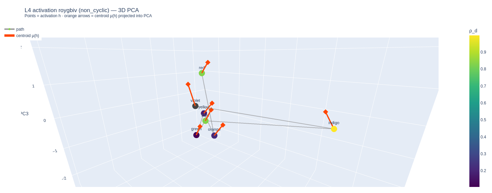
It's kind of hard to see in these pictures but basically, all of the colors except violet, demonstrate substantial contractive alignment. But the alignment is towards a point that is outside the sphere that encloses the activations, which seems to be a sort of median between translational alignment and contractive alignment. Maybe we will call it sectoral alignment. Again, maybe it is just incomplete alignment.Random nouns
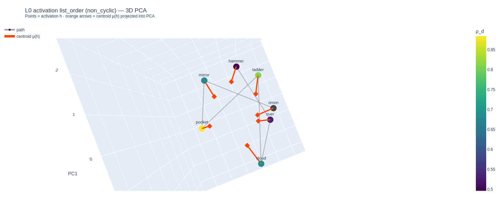
There's no sugarcoating the fact that this is some pretty obvious contractive alignment. No matter which way you look at it, there is very clear alignment. So clearly our hypothesis is wrong right? On the other hand, this concept set is not totally random. All the members are nouns. So maybe that is the conceptual centre that all these centroids are aligning to. This should not be too surprising to anyone who studies this stuff. Early layers of LLMs tend to focus on grammar and other surface level stuff. But if this is the case, then layers 1 through 5 should exhibit little to no alignment. And that is exactly what we see, I will spare you the pictures of random vectors, verification is left as an exercise to the reader and such. This suggests a further interesting hypothesis, concept sets whose members are strongly related should exhibit alignment across many layers. Concepts that are weakly related might exhibit early layer alignment, but that alignment should taper off quickly as you move through the depth of the network.Tools
Moving on, I'm going to skip the tools concept set, it doesn't really say anything *that* interesting, at least not that I can see. I mostly chose it to illustrate the example of a concept set which has some strong alignment, but whose members should exhibit equally strong or stronger alignment in other concept sets. There is some structure there but it is hard to make sense of it without running the risk of reading too much into it. In any case, the next section is far more interesting.
Animals
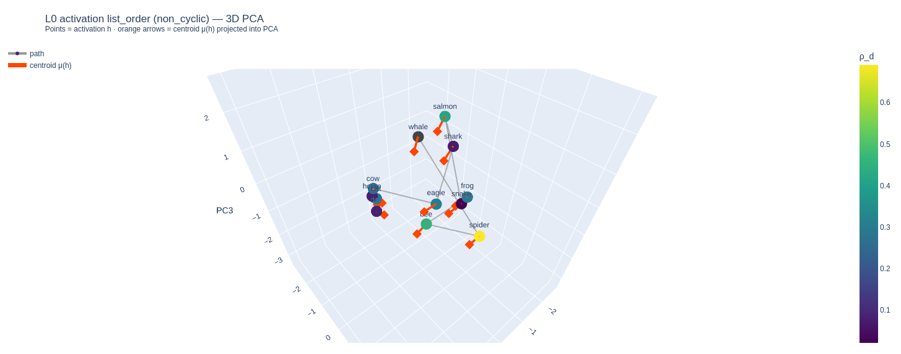
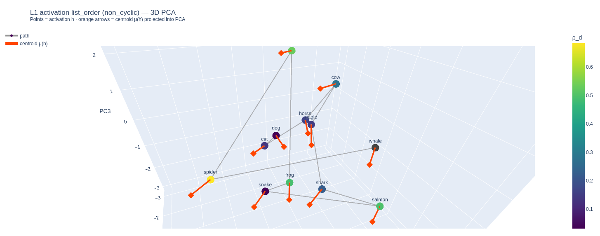
Obviously there is a lot less coherence here than in the previous layer, maybe it is a case of translational alignment, maybe all the activations are pointing towards the center of a larger concept. Is hard to say, but almost all of the nice structure from the previous layer is gone, or maybe duplicating it in a second layer would just be wasteful anyway? Onto layer 2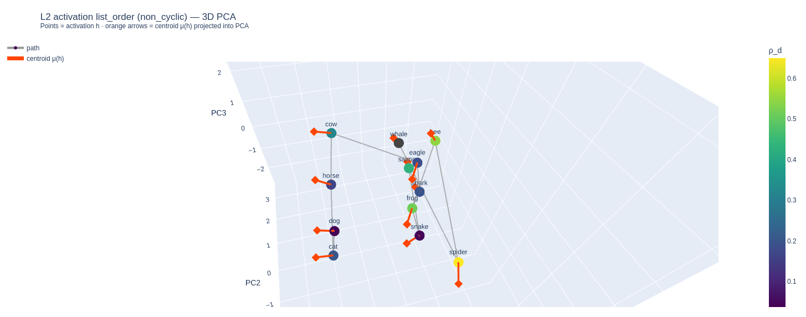
This is much more interesting. First of all, most importantly, Cow, Horse, Dog and Cat all have centroids pointing in the same direction and they all lie on roughly the same line in activation space. Clearly the model has identified a meaningful semantic direction. Actually (at least) two to be precise, the centroid direction, which seems to correspond to four-legged, terrestrial mammal and the line in activation space which seems to space from small and agile to big and ponderous, though not with the same fidelity as the centroid direction. What is also notable is the distinctive hyperplane separating the (terrestrial) mammals from everything else. Which makes sense given that, in the human imagination at least, those are the two main classes of animals. We might also ask why this particular concept shows so much structure early on compared to others. The first reason, I suspect, is that animals are a fairly tight concept, in the sense that even though every member of the concept set can be placed into different concept sets, most of those concept sets will be either subsets or supersets of the animal set, or have a great deal of overlap with the animal set. The second reason is that the variance within the concept set has greater variance. What I mean by this is that if you take colors, for example, and look at the difference between red and green and the difference between red and blue, the difference between those two differences is fairly uniform. By contrast, if you look at the difference between horses and whales, and the difference between horses and spiders, the difference between those differences is enormous. I suppose also, part of the reason that we see structure emerge here so early is that many of the first words humans ever used would have been to describe animals, so it is no surprise that these concepts are more deeply embedded in the latent space of human language than other, more modern concepts.
Years
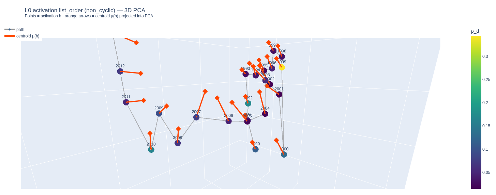
You'll have to excuse the bad picture. Hard to get a good shot of this one. But it is basically a reasonably clean structure. Same contractive alignment on layer 0 that we've come to expect. One interest thing is that decades are noticeable outliers in the activation space, but their centroids are not, at least in terms of their direction in the PCA basis. It should be noted that the PCA basis of the activation space and the centroid basis do not overlap 100%, I'm not sure how much they overlap, maybe it would be interesting to measure. Beyond that this layer and all other layers consistently display strong alignment at all layers except layer 1, which seems to be a standard pattern.Other concept sets
Beyond this, there are few more concept sets that I left in without writing a proper analysis. Most of them are kind of interesting, but don't really seem to say anything new or interesting as far as I can tell. Maybe you can see something I didn't.